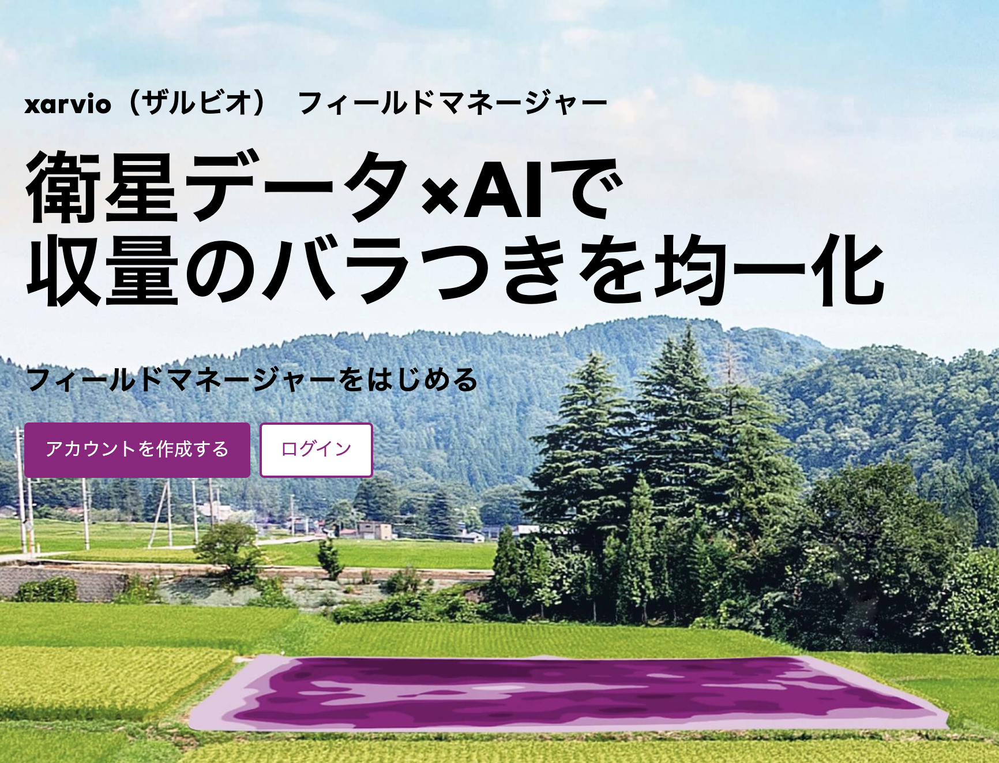

緑の情報革命
なんか取り止めもなく書いてしまった。けど本心。
背景
僕は、昔から農業がやりたかった。というより、農業にITを持ち込むをやりたかった。坂村研を志望したのも農業センサーネットワークをやりたい、というのが動機の一つだった。まぁ自分から積極的にその分野を対象にすることはなかったわけだが、、、。 この大きな原因の一つが、やはり農業に対する理解不足であったと思う。何でかはそのうち書くとして、今は某ともぞう農園にてたまに手伝ったりすることでだいぶ空気はわかるようになってきたと自分で感じる次第である。
そんな中考え得られた「農業に必要なIT」とは、現状把握からのシミュレーションである。ぶっちゃけ交通と変わらん・・・。元も子もないんだが、現状がとにかく把握できていない。 というのもしゃーなしで、そもそもセンシングが難しかったのだ、小規模農業では。 アメリカなどの大規模農業では、1990年代からリモートセンシングなどをバシバシやるようになり、収量予測からの先物扱いなどまで行われるようになっている。完全に規模の経済だ。
というわけで、まずこの現状把握を日本における小規模農業でもできないもんかと色々考え、必要なデータが無いかを調べ、必要な機能な何かを考えるというのを休日にシコシコやっていたわけだが、 もろにやりたいことが全部できてしまうサービスに出会ってしまった。。。
BASF Xarvio
それがBASFが提供するXarvioである。実は存在自体は2年ぐらい前から知ってはいたのだが、まぁ海外のだしなぁ・・・とまともに調べもしなかったのだが、これが素晴らしい完成度。 正直自分が必要と思っていた機能がほぼ全部ある。詳しいことはまた別の機会に・・・。
これを使って、まずともぞう農園が管理しているすべての圃場を登録した。凄まじいのが衛星データ。週１程度だろうと思っていたらなんと毎日更新。なんなら過去の状態も見られる。 これらのデータを用いて可変施肥を行うデータを出力することが可能。それらのデータは日本の農機メーカーも鋭意対応中。そして安い・・・正直非の打ちどころがない。
すごいなーと思ったのがBASFが作ったという点。肥料と農薬の製造元が作るアプリ（完全に私見だが超採算度外視モードだと思われる・・・）で生産を管理する。 個人的にはITシステムでお金を取るのではなく、その生産性向上に資するという点は非常に好感が持てる。 聞いた話だがGAFAMからの転職エンジニアじゃんじゃか採用して開発進めてるそうな。そりゃ強い・・・。

今後の展開
以下完全に私見。恐らく日本における圃場管理系アプリはすべてXarvioになる。理由としては圧倒的なアプリの完成度、初期データの豊富さ（筆ポリゴンも取込済）、そして全農による全面採用である。 日本におけるXarvioの販売は全て全農が統括しているそうで、先見の明を感じざるを得なかった。 この背景には農業の高度化という大義の裏で、日本が持つ真の食糧生産性を把握することが考えられる。米価など毎年決められているが、これらがかなりの精度で予測される未来が来るであろう。
そんな未来に中小規模農家はどう立ち向かえばいいか。我々としては、やはり味にこだわっていきたいと考えている。味=品質である。この実現のために、Xarvioを使うことを計画している。 さらには作業の省力化、直販、加工などを進めていく所存である。これらも追って述べていこう・・・。
緑の情報革命
緑の革命（みどりのかくめい、Green Revolution）とは、1940年代から1960年代にかけて、
高収量品種の導入や化学肥料の大量投入などにより穀物の生産性が向上し、穀物の大量増産を達成したことである。
農業革命の1つとされる場合もある。https://ja.wikipedia.org/wiki/%E7%B7%91%E3%81%AE%E9%9D%A9%E5%91%BD
緑の革命、しいてはその前に起きた農業革命とハーバー・ボッシュ法の開発によって、人類は飛躍的な増加と発展を経験した。次はITを用いた農業の高度化、「緑の情報革命」が起こる。 どんな結果がもたらされるかは定かではないが、ITを用いた農業、という手段に関しては絶対的な確度で起こる変化である。我々はこの緑の情報革命における急先鋒として、まず日本の農業の革命を先導したいと考える。